|
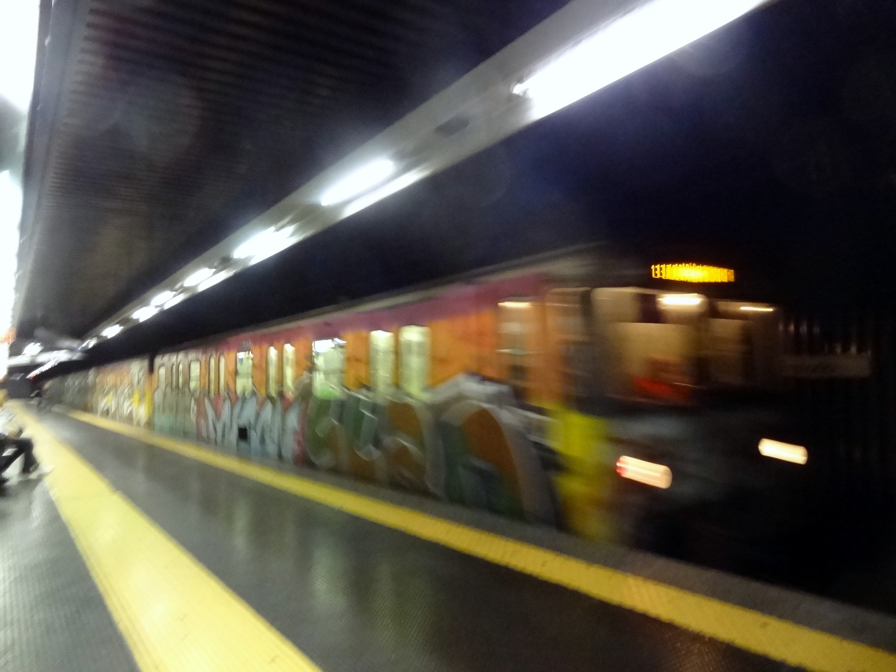 |
| If Barcelona is LA, Rome is New York. Got to see the Alps and Pyranees on the flight in. The Mediterranean is huge--you fly over it for hours. Got a ticket for the spiffy "Leonardo" express train from the airport to the Termini (train/bus/subway terminal), but the conductor shooed me off onto the scuzzy local across the tracks. No one spoke a word of English--or Spanish--but gave me pitying tragic glances when they saw the wheelie--another one of those! The most I could get out of anyone was "underground". At first I thought they meant get off, go under the track, and get a train back to the airport, but everyone blocked me from getting off. The train did end up in Rome at the wrong station. Turns out that "underground" was meant in the London sense--both stations were connected by the Metro. This was a rather stressful hour and a half (which should have been 20 min), but hey, I got the Paris experience for free. |
|
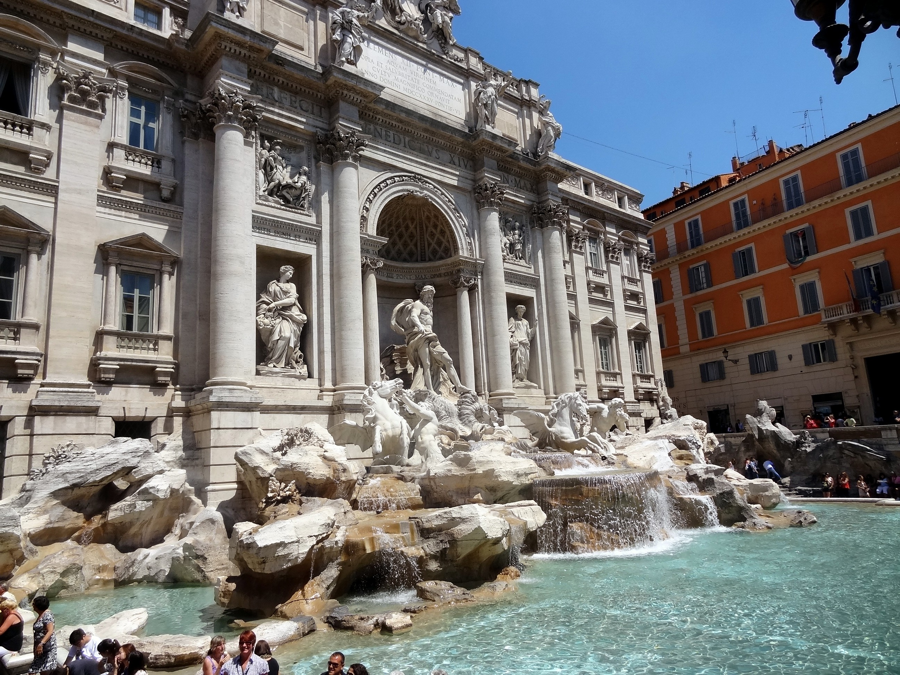 |
| Met Melia and Quill Nebeker for lunch and forgot to take any photos. It was Quill's graduation trip. Trevi fountain is gorgeous (like everything else). It made me want to visit all the Resphigi fountains, but I didnt. |
|
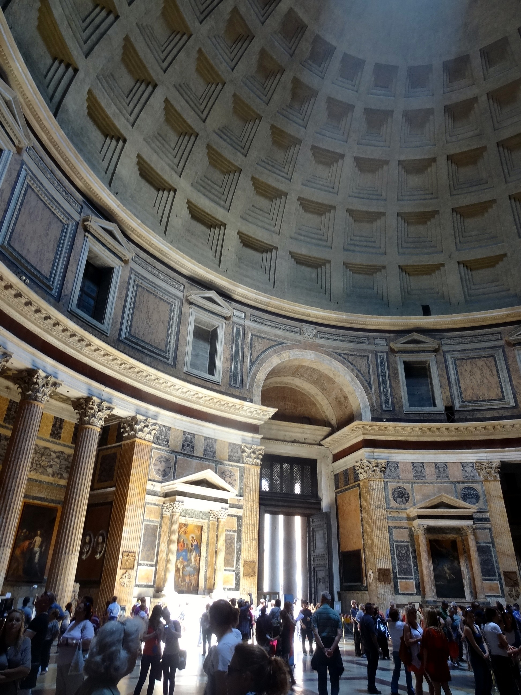 |
| The Pantheon defies photography. This is as inclusive a shot as I could get. Built in 27BC, rebuilt in 126AD, the building got its name from the heavens-like dome. Boniface VII converted it to a church in 609AD. Oddly, I'd never thought about it raining through the hole in the center, but the floor was wet. I was slightly underwhelmed because I remembered something more beautiful than this. It was a probably a drawing of a proposed monument to Isaac Newton that was designed by a Frenchman shortly after his death, and never built. |
|
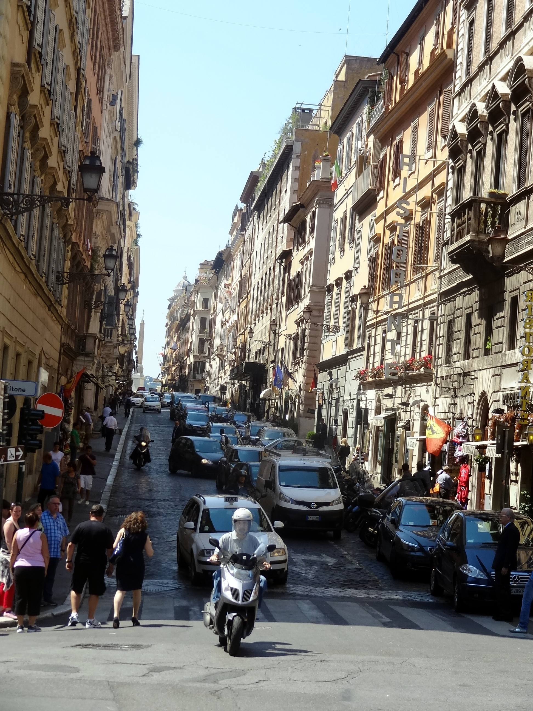 |
| Typical street scene |
|
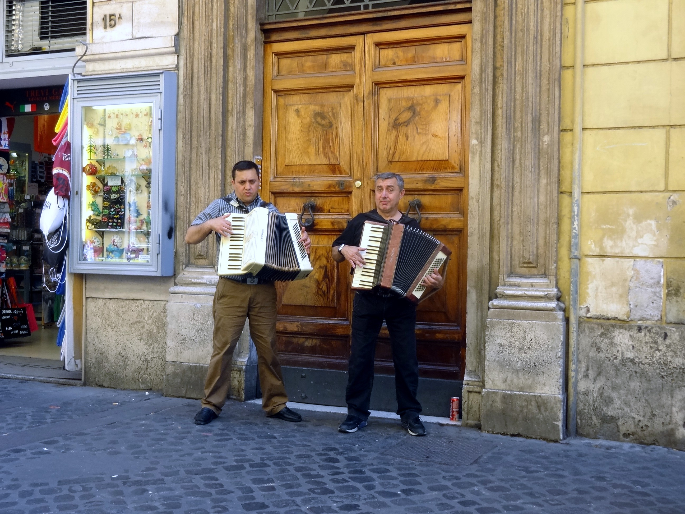 |
| First of many pizzas for lunch. Alongside the
trattoria, these guys were playing the Italian classic "Over the
Rainbow". One of the first things I learned from reading the menu
is that "latte" means milk, and if you order it, that's what you get.
I suppose I'll spend the rest of my life ordering "caffe latte". |
|
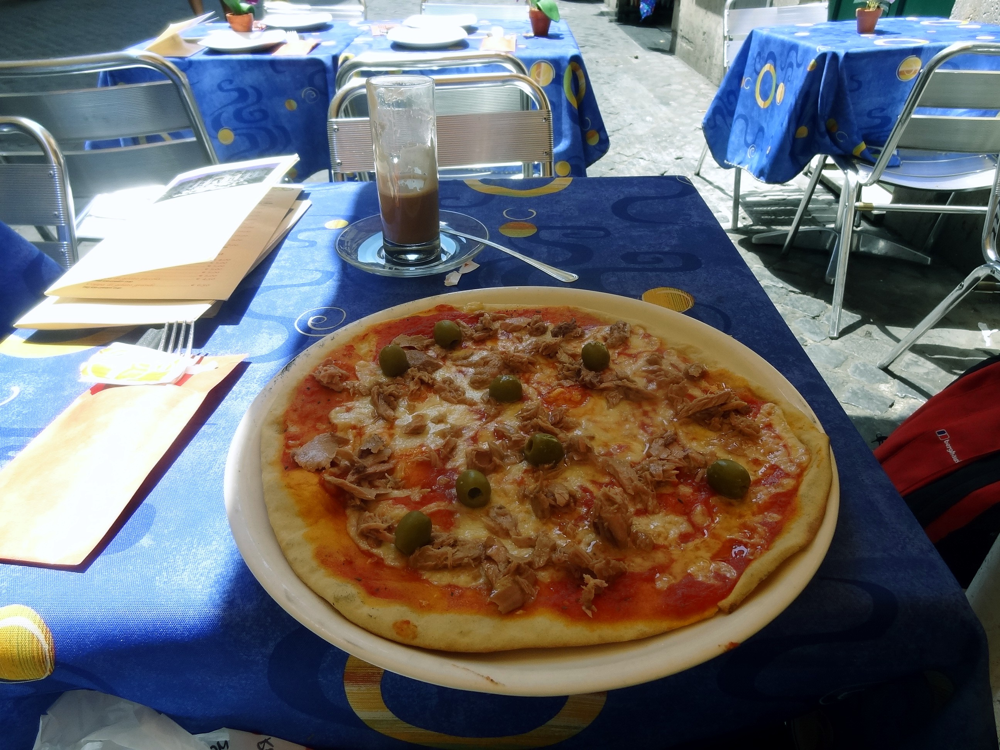 |
| Pizza lido -- tuna and olives. Haven't
seen this in the US. Note the quantity of cheese on the real thing. In
the US, if you can see anything but cheese, you think you're being
cheated. I actually lost 1 lb over two weeks eating pizza and gelato.
Walking around 8 hrs a day will do that--but I will never again feel
apologetic for ordering a pizza without cheese in the US. No
matter what kind of looks I get. I didn't entirely believe the advice,
but my friends had it right: It's hard to get a bad meal in Rome.
If the restaurant is right on a piazza or fountain or something, the
quality will be a couple of notches down and the price will be EU3 high.
Anything two or more blocks from a tourist-centric location will be
fine. |
|
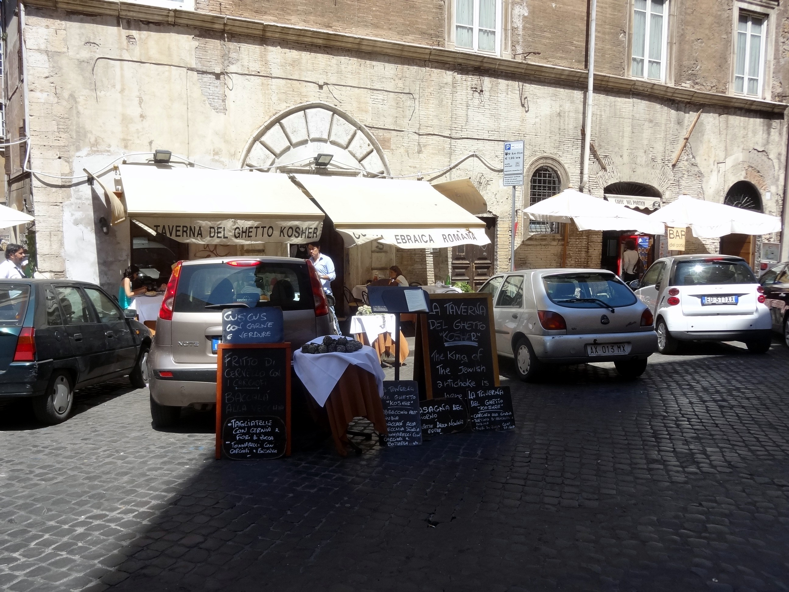 |
| Paul V created the ghetto in 1555 via the bull "Cum Nimis Absurdum" ("Since it is absurd and utterly inconvenient that the Jews, who through their own fault were condemned by God to eternal slavery..."). It's walled in and about three blocks long. |
|
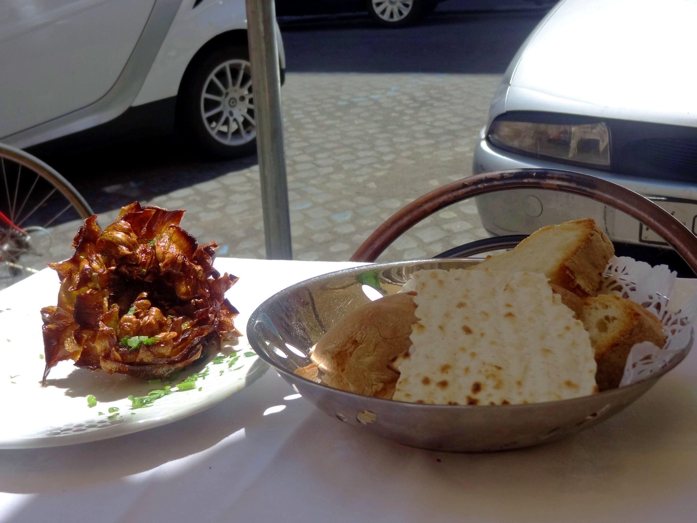 |
| An Austro-Canadian colleage recommended a restaurant that has since been converted to a wine store. So I ended up at the Taverna del Ghetto. Fried artichoke and matzoh. (The woman at the table next to me ordered a hamburger!, which caused a lot of clucking and fussing.) |
|
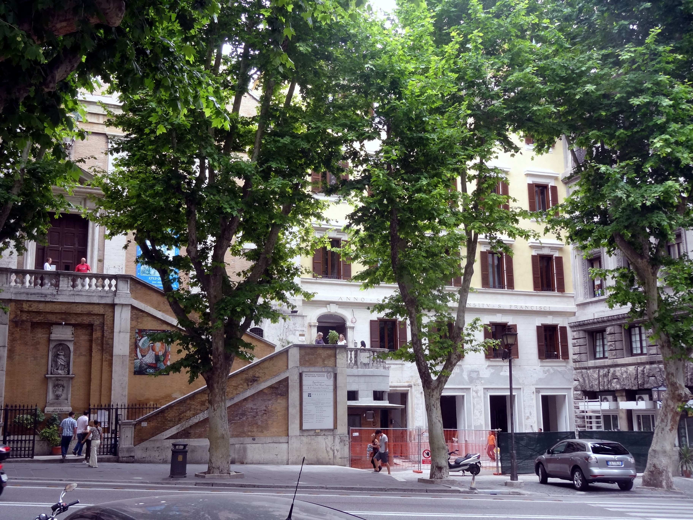 |
| Both Elizabeth Buie and the Marquis de Sade recommended the Cappuccin Ossuary, so how could I resist? From 1528 - 1870, the monks made artistic arrangements of the skeletons of those who died there--about 4,000 of them. You can't take photos, but somehow Wikipedia captured some of the detail from one of the rooms. |
|
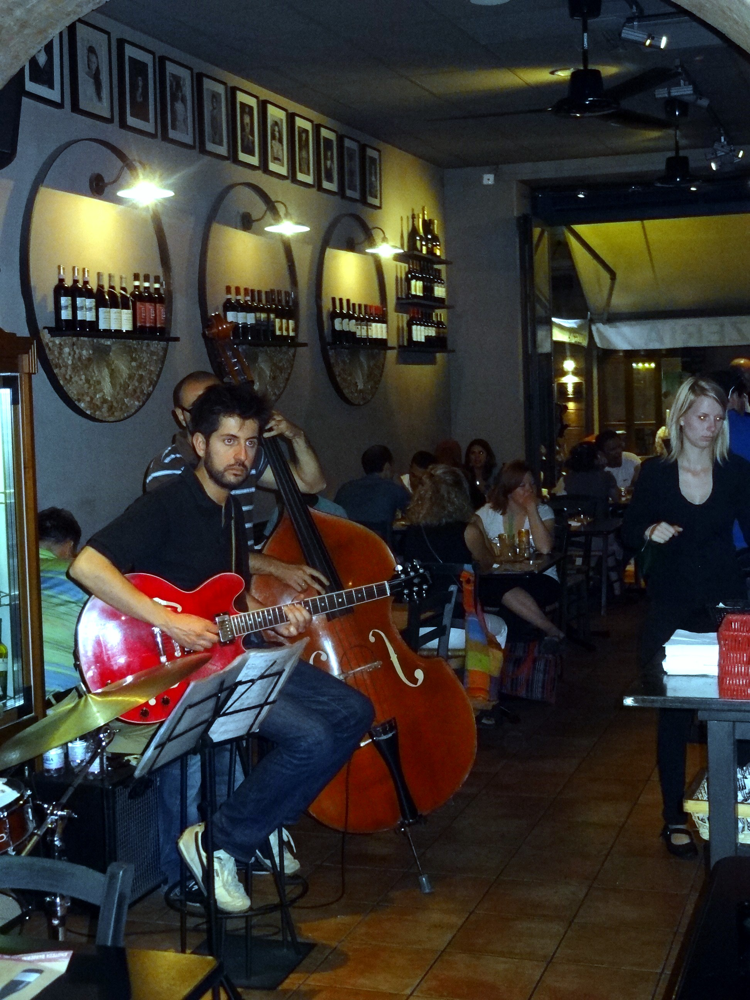 |
| Jazz combo, restaurant in Piazza Venezia |
|
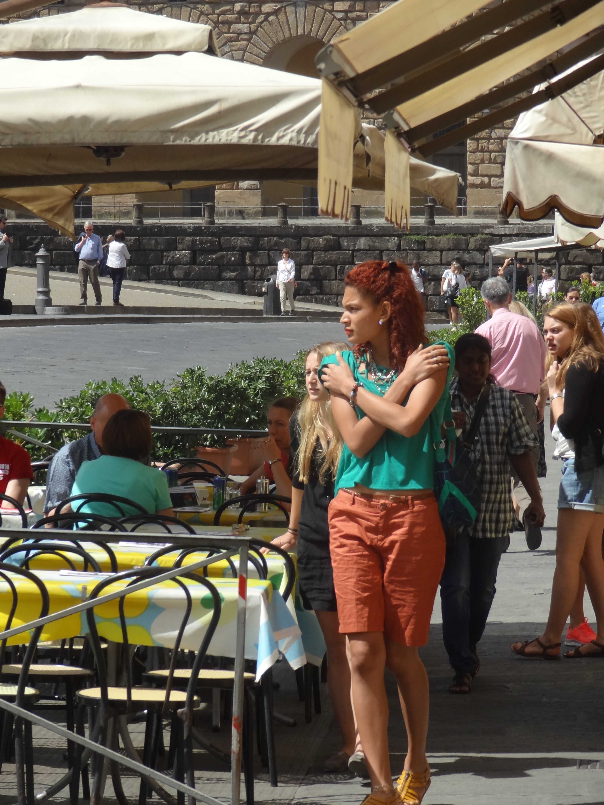 |
| Everybody in Italy looks like a model and
knows it. How can everybody be so relaxed and happy on the brink of a
meltdown? At lunch with Elizabeth Buie (another photo op missed), we sat
next to a Vatican music professor (choral) originally from Miami. His
comment was that Italy is about appearance. Nobody cares if the economy
melts down as long as you can look good in front of you friends. Sure,
life is tough, but that shouldn't keep you from having a great time.
(Pulling out of a train station, I spotted a big purple graffito: "Save
our Sweet Illusion.") Superficial? Is that any worse than the US, where
our self image is wedded to earing more money than our parents, and
hopefully than our friends, proving our usefulness to society? Italy can melt down and never really notice
it. |
|
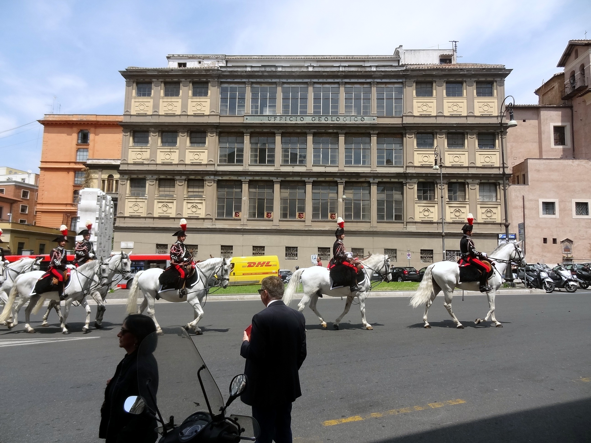 |
| We don't have anything like this in DC. |
| Meowing Tiger - Rome Zoo |